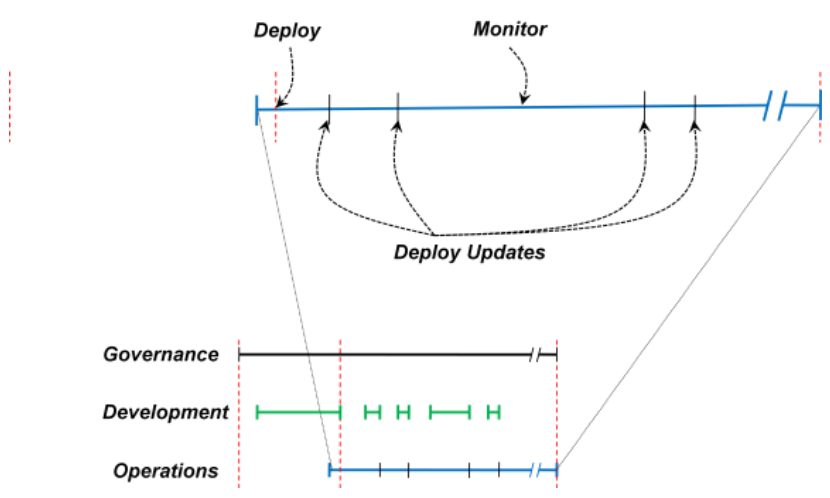
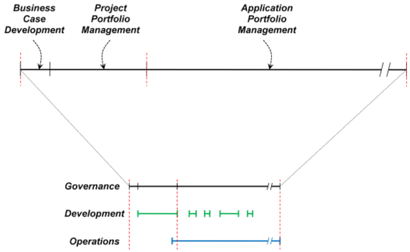
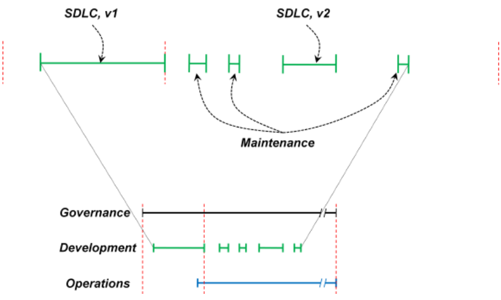

Your browser doesn't support the features required by impress.js, so you are presented with a simplified version of this presentation.
For the best experience please use the latest Chrome, Safari or Firefox browser.



Anteproyecto de Graduación
Maestría Profesional con énfasis en Sistemas de Información
"Definición de la Gestión del Ciclo de Vida de las Aplicaciones en el Departamento de Computación en la Nube de la empresa IBM"
Daniel Leitón Rivera - 200914530
Abril, 2018
Agenda
- ¿Qué es la Gestión del Ciclo de Vida de las Aplicaciones?
- Descripción de IBM
- Descripción del Problema
- Trabajos Similares
- Definición del Problema
- Justificación del Proyecto
- Objetivo General
- Objetivos Específicos
Gestión del Ciclo de Vida de las Aplicaciones (GCA)
- Gestión del ciclo de vida de los programas informáticos
- Gobierno
- Requerimientos
- Arquitectura de Software
- Desarrollo
- Pruebas
- Mantenimiento
- Gestión de Cambios
- Gestión de Proyectos
- Despliegue de Versiones
- ALM > SDLC
- Incluye todo el tiempo = dinero gastado en este activo
- Idea inicial => Final de la vida de la aplicación
Descripción de IBM
- En el Mundo
- Fundada en 1911
- 425,000 empleados
- Líder en Patentes en EEUU
- En Costa Rica
- Finanzas
- Cadenas de Suministro
- Soporte de Operaciones
- Análisis de Negocio
- Administración de Proyectos
- Soporte de Operaciones
- Computación en la Nube
Descripción de IBM
- Computación en la Nube
- Sistemas Operativos
- SAP
- Oracle
- Soporte al Usuario Final
- Gestión de Infraestructura
- Ejecutivos de Entrega de Proyectos
- Operaciones de Desarrollo (DevOps)
- Operaciones de Desarrollo (DevOps)
- Inició en 2017
- Presta servicios de desarrollo a nivel Global
- Servicios de Aplicaciones Gestionadas en la nube
- Desarrolla proyectos internos y de I&D
Descripción del Problema
- No posee documentación de procesos para:
- Definición de Requerimientos
- Criterios de Aceptación
- Diseño de la Interfaz y Experiencia de Usuario
- Desarrollo de Software
- Pruebas de las funcionalidades
- Configuración de Ambientes
- Integración de código fuente
- Despliegue de las versiones
- Gestión de Cambios
- Inexistencia de Definición de Roles => Falta de Especialización
Descripción del Problema
- El “Libro de Jugadas” no describe una línea de producción de software
- En cada proyecto se siguen procesos de la GCA de forma heterogénea
- Complejidad para auditar los sistemas
- Dificultad para encontrar el origen de los errores
Trabajos Similares
- Mejora de procesos para fomentar la competitividad de la pequeña y mediana industria del software de Iberoamérica
- Modelo COMPETISOFT
- Gestión de Negocio
- Gestión de Procesos
- Gestión de Proyectos
- Gestión de Recursos
- Gestión de Conocimiento
- Desarrollo de Software
- Mantenimiento de Software
- Metodología para el aseguramiento de la calidad en el desarrollo de aplicaciones para dispositivos móviles
- “Automated testing framework for mobile applications based in user-interaction features and historical bug information”
- "A Top-Down Design Approach for an Automated Testing Framework"
Definición del Problema
¿Cómo debe realizarse la Gestión del Ciclo de vida de las Aplicaciones (GCA) en el Departamento de Computación en la nube de IBM?
o Proceso de Construcción de Aplicaciones
Justificación del Proyecto
- Existe la intención de Crear una Fábrica de Software en Costa Rica
- Datos de utilización de personal en los proyectos (Por conseguir)
- Definir Roles, Responsabilidades y campos de especialización de los miembros de los equipos
- Materialización de Pruebas de Concepto (POC)
- Expansión de los Productos Viables Mínimos (MVP)
- Utilizar los Estándares de la Industria
- Impulsar el uso de "agile" y "Design Thinking"
- Facilitar Auditoría de Sistemas
Objetivo General
Definir la Gestión del Ciclo de vida de las Aplicaciones (GCA) en el Departamento de Computación en la Nube de IBM
Objetivos Específicos
- Conocer las prácticas recomendadas en la industria respecto a la GCA para promover su mejora continua dentro de esta organización
- Adaptar las prácticas de aseguramiento de la calidad del software en la GCA para minimizar los errores en ambiente de producción
- Diseñar una línea de producción de aplicaciones que facilite la auditoría de los sistemas y su documentación
- Listar las herramientas recomendadas para la GCA dentro de la plataforma IBM Cloud, también conocida como bluemix
- Detallar los roles y responsabilidades de los miembros de los equipos de trabajo
Principal Referencia Bibliográfica